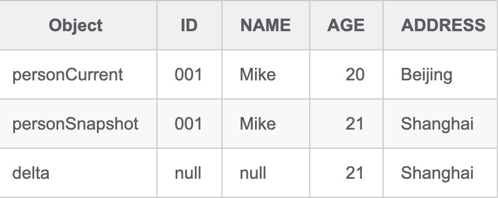

本篇文章内容来自 我的Github项目：Aggregate Persistence Readme文件。
这个项目源于我在做DDD咨询时的一个痛点。我们在做DDD时，不论EventStorming怎么Happy，到最后都会遇到一个痛点：分层架构落地。分层架构本身可以通过讲解和示例帮助团队掌握，但其中聚合的持久化却一直没有发现好的解决方案，写出来的代码自己都不是很满意。所以最后才有了这个项目，也欢迎大家使用并提宝贵建议。
DDD-China分享摘要：在DDD实践中，聚合应该作为一个整体进行读取和持久化，以确保业务规则不被破坏。然而现有的持久化技术(如ORM框架、Spring Data等)直接实现聚合持久化，特别是关系型数据库的持久化时，总是面临不少挑战。在本次分享中，我将以实际项目为例，探讨如何实现一种优雅的方案来解决这个问题。
1. 简介
领域驱动设计(DDD)已经被业界认为是行之有效的复杂问题解决之道。随着微服务的流行，DDD也被更多的团队采纳。然而在DDD落地时，聚合(Aggregate)的持久化一直缺少一种优雅的方式解决。
在DDD实践中，聚合应该作为一个完整的单元进行读取和持久化，以确保业务的不变性或者说业务规则不变破坏。例如，订单总金额应该与订单明细金额之和一致。
由于领域模型和数据库的数据模型可能不一致，并且聚合可能涉及多个实体，因此Hibernate, MyBatis和Spring Data等框架直接用于聚合持久化时，总是面临一些困难，而且代码也不够优雅。有人认为NoSQL是最适合聚合持久化的方案。确实如此，每个聚合实例就是一个文档，NoSQL天然为聚合持久化提供了很好的支持。然而并不是所有系统都适合用NoSQL。当遇到关系型数据库时，一种方式是将领域事件引入持久化过程。也就是在处理业务过程中，聚合抛出领域事件，Repository根据领域事件的不同，执行不同的SQL，完成数据库的修改。但这样的话，Repository层就要引入一些逻辑判断，代码冗余增加了维护成本。
本项目旨在提供一种轻量级聚合持久化方案，帮助开发者真正从业务出发设计领域模型，不需要考虑持久化的事情。在实现Repository持久化时，不需要考虑业务逻辑，只负责聚合的持久化，从而真正做到关注点分离。
方案的核心是Aggregate<T>容器，T是聚合根的类型。Repository以Aggregate<T>为核心，当Repository查询或保存聚合时，返回的不是聚合本身，而是聚合容器Aggregate<T>。以订单付款结账为例，Application Service的代码如下：
@Transactional
public void checkout(String orderId, CheckoutRequest request) {
Aggregate<Order> aggregate = orderRepository.findById(orderId);
Order order = aggregate.getRoot();
Payment payment = new Payment(PaymentType.from(request.getPaymentType()), request.getAmount());
order.checkout(payment);
orderRepository.save(aggregate);
}
Aggregate<T>保留了聚合的历史快照，因此在Repository保存聚合时，就可以与快照进行对比，找到需要修改的实体和字段，然后完成持久化工作。它提供以下功能：
public R getRoot()：获取聚合根public R getRootSnapshot(): 获取聚合根的历史快照public boolean isChanged(): 聚合是否发生了变化public boolean isNew()：是否为新的聚合public <T> Collection<T> findNewEntities(Function<R, Collection<T>> getCollection, Predicate<T> isNew)：在实体集合（例如订单的所有订单明细行中）找到新的实体public <T, ID> Collection<T> findChangedEntities(Function<R, Collection<T>> getCollection, Function<T, ID> getId)：在实体集合（例如所有订单明细行中）找到发生变更的实体public <T, ID> Collection<T> findRemovedEntities(Function<R, Collection<T>> getCollection, Function<T, ID> getId)：在实体集合（例如所有订单明细行中）找到已经删除的实体
工具类DataObjectUtils提供了对象的对比功能。它可以帮助你修改数据库时只update那些变化了的字段。以Person为例，DataObjectUtils.getDelta(personSnapshot, personCurrent)将返回Delta值。如果属性没有发生变化，Delta的对应属性值为null, 否则为修改后的值。下表展示了这种差别，personCurrent是当前值，personSnapshot是旧值。

Object | ID | NAME | AGE | ADDRESS | VERSION
—————— |——|——|——|——|——
personCurrent | 001 | Mike | 20 | Beijing | 1
personSnapshot | 001 | Mike | 21 | Shanghai | 1
delta | null | null | 21 | Shanghai | null
与Hibernate的@Version类似，聚合根需要实现Versionable接口，以便Repository基于Version实现乐观锁。Repository对聚合的所有持久化操作，都要判断Version。示意SQL如下：
insert into person (id, name, age, address, version )
values (#{id}, #{name}, #{age}, #{address}, 1)
update person set age = #{age}, address = #{address}, version = version + 1
where id = #{id} and version = #{version}
delete person
where id = #{id} and version = #{version}
2. 使用Aggregate-Persistence
在项目中加入以下依赖，就可以使用Aggregate-persistence的功能了：
<dependency>
<groupId>com.github.meixuesong</groupId>
<artifactId>aggregate-persistence</artifactId>
<version>1.0.0</version>
</dependency>
3. 使用示例
Aggregate-Persistence本身并不负责持久化工作，它是一个工具，用于识别聚合的变更，例如发现有新增、修改和删除的实体，真正的持久化工作由你的Repository实现。
接下来我们通过订单聚合持久化项目展示Repository如何利用Aggregate-Persistence的功能，实现订单聚合的持久化。该项目的技术栈使用Springboot, MyBatis。
订单聚合包括两个实体：订单（Order）和订单明细行（OrderItem），其中订单是聚合根：
public class Order implements Versionable {
private String id;
private Date createTime;
private Customer customer;
private List<OrderItem> items;
private OrderStatus status;
private BigDecimal totalPrice;
private BigDecimal totalPayment;
private int version;
}
public class OrderItem {
private Long id;
private Product product;
private BigDecimal amount;
private BigDecimal subTotal;
}
OrderRepository完成订单的持久化工作，主要方法如下：
public class OrderRepository {
Aggregate<Order> findById(String orderId);
void save(Aggregate<Order> orderAggregate);
void remove(Aggregate<Order> orderAggregate);
}
在本例中，OrderRepository需要完成订单的新增、订单项的修改（如购买数量变化或者移除了某个商品）、订单的删除功能。由于领域模型与数据模型不一致，因此保存时，Repository将Domain model(Order)转换成Data object(OrderDO)，然后使用MyBatis完成持久化。查询时，进行反向操作，将Data object转换成Domain model.
3.1 查询订单
下面的代码用于查询订单，并返回Aggregate<Order>。当查询数据库并创建Order聚合后，调用AggregateFactory.createAggregate创建Aggregate<T>对象，在Aggregate<T>内部，它将自动保存Order的快照，以供后续对比。
public Aggregate<Order> findById(String id) {
OrderDO orderDO = orderMapper.selectByPrimaryKey(id);
if (orderDO == null) {
throw new EntityNotFoundException(“Order(“ + id + “) not found”);
}
Order order = orderDO.toOrder();
order.setCustomer(customerRepository.findById(orderDO.getCustomerId()));
order.setItems(getOrderItems(id));
return AggregateFactory.createAggregate(order);
}
3.2 保存新增订单、修改订单
使用save接口方法完成订单及订单明细行的新增、修改和删除操作。示例代码如下：
void save(Aggregate<Order> orderAggregate) {
if (orderAggregate.isNew()) {
//insert order
Order order = orderAggregate.getRoot();
orderMapper.insert(new OrderDO(order));
//insert order items
List<OrderItemDO> itemDOs = order.getItems().stream()
.map(item -> new OrderItemDO(order.getId(), item))
.collect(Collectors.toList());
orderItemMapper.insertAll(itemDOs);
} else if (orderAggregate.isChanged()) {
//update order
updateAggregateRoot(orderAggregate);
//delete the removed order items from DB
removeOrderItems(orderAggregate);
//update the changed order items
updateOrderItems(orderAggregate);
//insert the new order items into DB
insertOrderItems(orderAggregate);
}
}
上例代码中，当orderAggregate.isNew()为true时，调用MyBatis Mapper插入数据。否则如果聚合已经被修改，则需要更新数据。
首先更新聚合根。领域对象(Order)首先被转换成数据对象（OrderDO），然后DataObjectUtils对比OrderDO的历史版本，得到Delta值，最终调用MyBatis的update selective方法更新到数据库中。代码如下：
private void updateAggregateRoot(Aggregate<Order> orderAggregate) {
//get changed fields and its value
OrderDO delta = getOrderDODelta(orderAggregate);
//only update changed fields, avoid update all fields:
// e.g. update sales_order set xxx = ?, version = version + 1 where id = ? and version = ?
if (orderMapper.updateByPrimaryKeySelective(delta) != 1) {
throw new OptimisticLockException(
String.format("Update order (%s) error, it’s not found or changed by another user",
orderAggregate.getRoot().getId())
);
}
}
private OrderDO getOrderDODelta(Aggregate<Order> orderAggregate) {
OrderDO current = new OrderDO(orderAggregate.getRoot());
OrderDO old = new OrderDO(orderAggregate.getRootSnapshot());
//compare field by field, if field is not changed, its value is null, otherwise its value is current new value
OrderDO delta = DataObjectUtils.getDelta(old, current);
//because id and version are unchanged, their value are null, so set to new value, and then the mapper can update by id and version
delta.setId(current.getId());
delta.setVersion(current.getVersion());
return delta;
}
对于订单明细行的增删改，都是通过Aggregate找到新增、删除和修改的实体，然后完成数据库操作。代码示例如下：
private void removeOrderItems(Aggregate<Order> orderAggregate) {
Collection<OrderItem> removedEntities = orderAggregate.findRemovedEntities(Order::getItems, OrderItem::getId);
removedEntities.stream().forEach((item) -> {
if (orderItemMapper.deleteByPrimaryKey(item.getId()) != 1) {
throw new OptimisticLockException(
String.format("Delete order item (%d) error, it's not found", item.getId())
);
}
});
}
private void updateOrderItems(Aggregate<Order> orderAggregate) {
Collection<OrderItem> updatedEntities = orderAggregate.findChangedEntities(Order::getItems, OrderItem::getId);
updatedEntities.stream().forEach((item) -> {
if (orderItemMapper.updateByPrimaryKey(new OrderItemDO(orderAggregate.getRoot().getId(), item)) != 1) {
throw new OptimisticLockException(
String.format("Update order item (%d) error, it’s not found", item.getId())
);
}
});
}
private void insertOrderItems(Aggregate<Order> orderAggregate) {
//OrderItem.getId()为空表示新增实体
Collection<OrderItem> newEntities = orderAggregate.findNewEntities(Order::getItems, (item) -> item.getId() == null);
if (newEntities.size() > 0) {
List<OrderItemDO> itemDOs = newEntities.stream()
.map(item -> new OrderItemDO(orderAggregate.getRoot().getId(), item))
.collect(Collectors.toList());
orderItemMapper.insertAll(itemDOs);
}
}
Aggregate<T>提供的findXXXEntities系列方法，都是针对订单明细行这样的实体集合。例如订单明细中，可能增加了商品A，修改了商品B的数量，删除了商品C。findXXXEntities方法用于找出这些变更。第1个参数是函数式接口，用于获取实体集合，以便在此集合中识别新增、修改和删除的实体。第2个参数也是函数式接口，获得实体主键值以找到同一实体进行对比（findRemovedEntities, findChangedEntities）或者判断是否为新的实体（findNewEntities）。
需要提醒的是，当聚合发生变化时，不论聚合根是否发生变化，都应该修改聚合根的版本号，以确保聚合作为一个整体被修改。
3.3 删除订单
删除订单的同时，需要删除所有订单明细行。
public void remove(Aggregate<Order> aggregate) {
Order order = aggregate.getRoot();
if (orderMapper.delete(new OrderDO(order)) != 1) {
throw new OptimisticLockException(
String.format(“Delete order (%s) error, it’s not found or changed by another user”, order.getId())
);
}
orderItemMapper.deleteByOrderId(order.getId());
}
完整的示例代码见订单聚合持久化项目
4. 总结
总的来说，本项目提供了一种轻量级聚合持久化方案，能够帮助开发者设计干净的领域模型的同时，很好地支持Repository做持久化工作。通过持有聚合根的快照，Aggregate<T>可以识别聚合发生了哪些变化，然后Repository使用基于Version的乐观锁和DataObjectUtils在字段属性级别的比较功能，实现按需更新数据库。
反馈收集
战菲：
- Repo.save时，会先查询一遍聚合，然后手工对比得出差异，再用jooq完成数据修改。
- 没有version，部分地方使用select for update悲观锁。如果没有使用悲观锁的情况下，可能会出现覆盖其他用户的修改。（例如查询后保存前，其他用户又修改了数据）
- 主要问题：
- 查2遍
- 手工对比，代码太乱
- 没有处理并发修改的问题
- Aggregate-Persistence能够解决上述3个主要问题